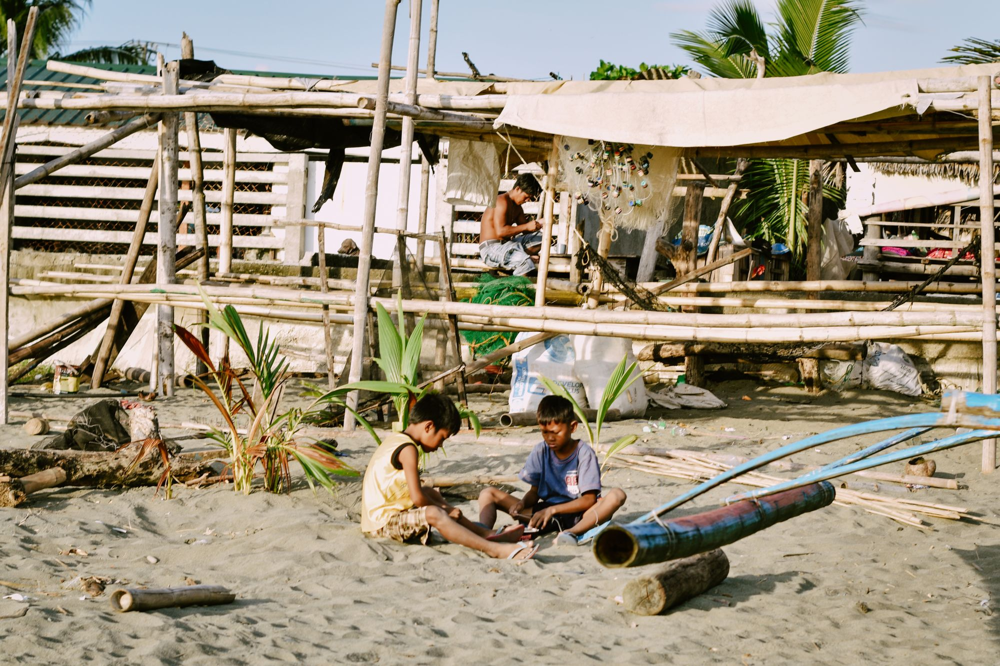

An ordinary man. A heartfelt mission.
A little kindness.
A lasting difference.
I'm just an ordinary man traveling around the Philippines, meeting different families who are struggling and in need of financial help. I may not have everything in life, but I believe that even in my own simple ways, I can make a difference in someone else's life.
My mission is to find families who need a helping hand, listen to their stories, understand their struggles, and give whatever assistance I can. I want to bring hope to those who are going through difficult times and remind them that they are not alone.
Every place I visit, every family I meet, and every story I hear reminds me why I started this journey. I know I can't help everyone, but if I can change even one family's life at a time, then every mile I travel is worth it.
This journey is not about fame, recognition, or becoming someone important. It's about sharing what I can, spreading kindness, and inspiring others to do the same.
Stories along the way
Different families. The same hope.
Meet the people at the heart of this journey. A helping hand can change their tomorrow.
Gathering the stories…
These are fictional sample stories with illustrative photos. Real family stories will be shared with permission.
Distance is no barrier to kindness
Give anytime,
anywhere.
Helping a family in need has never been easier. Wherever you are in the world, you can be part of this mission by giving anytime, anywhere, using the available payment methods that are accessible and convenient for the families we help.
100% of your donations and contributions go directly to the families. Every amount, big or small, is intended to provide immediate assistance to those who need it most.
No amount is too small, and no act of kindness goes unnoticed. Your generosity can help put food on the table, provide basic necessities, and give struggling families a chance to get back on their feet.
Together, we can make a difference, one family at a time.
See how your kindness reaches a family“If I can change even one family’s life at a time,
then every mile I travel is worth it.”